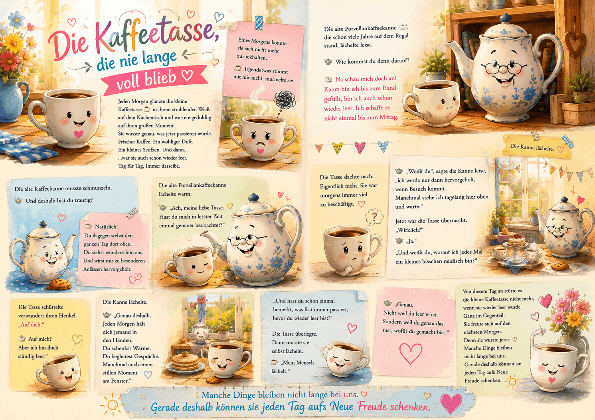

Best AI Website CreatorEine Gedankenreise zum Verschenken

🌿 Die Kaffeetasse, die nie lange voll blieb
Jeden Morgen glänzte die kleine Kaffeetasse ☕
in ihrem strahlenden Weiß auf dem Küchentisch
und wartete geduldig auf ihren großen Moment.
Sie wusste genau, was jetzt passieren würde.
Frischer Kaffee.
Ein wohliger Duft.
Ein kleines Seufzen.
Und dann...
...war sie auch schon wieder leer.
Tag für Tag.
Immer dasselbe.
Eines Morgens konnte sie sich nicht mehr zurückhalten.
☕ Irgendetwas stimmt mit mir nicht, murmelte sie.
Die alte Porzellankaffeekanne 🫖 ,
die schon viele Jahre auf dem Regal stand,
lächelte leise.
🫖 Wie kommst du denn darauf?
☕ Na schau mich doch an!
Kaum bin ich bis zum Rand gefüllt,
bin ich auch schon wieder leer.
Ich schaffe es nicht einmal bis zum Mittag.
Die alte Kaffeekanne musste schmunzeln.
🫖 Und deshalb bist du traurig?
☕ Natürlich
Du dagegen stehst den ganzen Tag dort oben.
Du siehst wunderschön aus.
Und wirst nur zu besonderen Anlässen hervorgeholt.
Die alte Porzellankaffeekanne lächelte warm.
🫖 Ach, meine liebe Tasse.
Hast du mich in letzter Zeit einmal genauer beobachtet?
Die Tasse dachte nach.
Eigentlich nicht.
Sie war morgens immer viel zu beschäftigt.
🫖 Weißt du,
sagte die Kanne leise,
ich werde nur dann hervorgeholt, wenn Besuch kommt.
Manchmal stehe ich tagelang hier oben und warte.
Jetzt war die Tasse überrascht.
☕ Wirklich?
🫖 Ja.
Und weißt du,
worauf ich jedes Mal ein kleines bisschen neidisch bin?
Die Tasse schüttelte verwundert ihren Henkel.
🫖 Auf dich.
☕ Auf mich?
Aber ich bin doch ständig leer!
Die Kanne lächelte.
🫖 Genau deshalb.
Jeden Morgen hält dich jemand in den Händen.
Du schenkst Wärme.
Du begleitest Gespräche.
Manchmal auch einen stillen Moment am Fenster.
Und hast du schon einmal bemerkt,
was fast immer passiert, bevor du wieder leer bist?
Die Tasse überlegte.
Dann musste sie selbst lächeln.
☕ Mein Mensch lächelt.
🫖 Genau.
Nicht weil du leer wirst.
Sondern weil du genau das tust, wofür du gemacht bist.
Von diesem Tag an
störte es die kleine Kaffeetasse nicht mehr,
wenn sie wieder leer wurde.
Ganz im Gegenteil.
Sie freute sich auf den nächsten Morgen.
Denn sie wusste jetzt:
Manche Dinge bleiben nicht lange bei uns.
Gerade deshalb können sie jeden Tag aufs
Neue Freude schenken.
🎵 Wer mag, kann diese Gedankenreise mit folgendem Lied begleiten:
" Die Prinzen - Es war nicht alles schlecht "
Quelle: YouTube – Originalvideo
"https://youtu.be/efOM1tcdGAA?si=2Wp8i9vQdFWRomJ0"
Im Alltag vergleichen wir uns manchmal mit anderen.
Wir glauben, sie seien wichtiger, erfolgreicher oder würden mehr bewirken als wir selbst.
Dabei übersehen wir leicht,
wie viel Freude wir bereits mit den kleinen Dingen schenken,
die für uns selbstverständlich geworden sind.
Diese Geschichte lädt dazu ein,
den eigenen Platz nicht nach seiner Größe zu beurteilen,
sondern nach den kleinen Spuren,
die wir jeden Tag im Leben anderer hinterlassen.
Vielleicht ist gerade das, was uns so alltäglich erscheint,
für jemanden ein ganz besonderer Moment.
Manchmal entstehen Gedankenreisen aus großen Fragen.
Manchmal reicht aber auch eine ganz gewöhnliche Kaffeetasse auf dem Frühstückstisch.
Aus der Beobachtung eines alltäglichen Gegenstands entstand die Idee, ihm eine Stimme zu geben.
Beim Schreiben wurde schnell deutlich, dass die Geschichte eigentlich gar nichts mit Kaffee zu tun hat.
Sie erzählt von einem Gefühl, das viele Menschen kennen.
Dem Vergleich mit anderen.
Und von der überraschenden Erkenntnis,
dass wir oft längst einen wertvollen Platz im Leben anderer haben, ohne es selbst zu bemerken.
Vielleicht genügt manchmal schon ein Lächeln am Morgen, um jemandem den Tag ein wenig heller zu machen.
Vielleicht begegnest du heute einer kleinen Alltagssituation, die dir bisher selbstverständlich erschien.
Einer Tasse Kaffee.
Einem kurzen Gespräch.
Einem freundlichen Lächeln.
Oder einem Menschen, der einfach da ist.
Vielleicht sind es genau diese kleinen Augenblicke, die den größten Unterschied machen.
Nicht weil sie außergewöhnlich sind.
Sondern weil sie jeden Tag aufs Neue Wärme schenken.
Best AI Website Creator